Chapter 9: Adjective — kaisa hai¶
Adjective — kaisa hai, kitna hai, kaunsa hai
Adjective wo shabd hai jo noun ke baare me kuch batata hai — kaisa, kitna, kaunsa, kiska. Ek hi adjective badal kar poora vaakya badal jaata hai: a house aur a beautiful old wooden house me zameen-aasmaan ka farq hai. Is chapter ka sabse qeemti hissa aakhir me hai — adjectives ka kram, wo rule jo native log naam se nahi jaante, par kabhi todte bhi nahi.
- 1Adjective kahan baithta hai — do jagah
- 2Adjective ke prakaar
- 3Degrees of comparison — teen seedhiyan
- 4Adjectives ka kram — chapter ka sabse qeemti hissa
- 5Adjective se Adverb — kab -ly lagta hai
- 6Wo galtiyan jo hum sach me karte hain
- 7Chhota naksha
Ek line me
An adjective describes or limits a noun or pronoun. Jo noun ke baare me batata ho — kaisa, kitna, kaunsa — wo adjective hai.
- She has a sharp memory. "sharp" bata raha hai memory kaisi hai.
- Three boys were waiting outside. "three" bata raha hai kitne — ye bhi adjective hai.
- The tea is cold. Adjective noun ke baad bhi aa sakta hai — linking verb ke zariye.
9.1 Adjective kahan baithta hai — do jagah¶
| Jagah | Naam | Example |
|---|---|---|
| Noun se pehle | Attributive | a heavy bag · an honest man |
| Linking verb ke baad | Predicative | The bag is heavy. · He seems honest. |
Kuch adjectives sirf ek hi jagah chalte hain
asleep, alive, awake, afraid, alone, ill — ye sirf verb ke baad aate hain.
✓ The baby is asleep. ✗ an asleep baby (iske liye "a sleeping baby" bolo).
Doosri taraf main, mere, elder, former sirf noun se pehle aate hain — the main road, par "The road is main" galat hai.
9.2 Adjective ke prakaar¶
| Prakaar | Kya batata hai | Examples |
|---|---|---|
| Quality | kaisa hai | a clever boy, tall building, red cloth |
| Quantity | kitna (bina ginti) | some water, much noise, enough time |
| Number | kitne (ginti me) | five books, second chance, many people |
| Demonstrative | kaunsa — ishaara | this pen, those chairs |
| Possessive | kiska | my bag, their house |
| Interrogative | sawaal | Which shirt? Whose turn? |
| Distributive | alag-alag | each student, every day, neither option |
| Proper | khaas naam se bana | Mughal architecture, Bengali sweets |
| Emphasizing | zor dena | with my own eyes, the very thing |
| Article | khaas ya aam | a boy, an apple, the boy |
Emphasizing adjective — "own" aur "very"¶
Ye adjective noun ke baare me koi nayi jaankari nahi deta — bas us par zor deta hai. Hindi ka "apni hi", "khud ki", "wahi" wala bhaav.
- I saw it with my own eyes. Maine apni khud ki aankhon se dekha — kisi se suna nahi.
- This is the very thing I was looking for. Bilkul wahi cheez jo main dhoondh raha tha.
- She runs her own business. Uska apna business — kisi aur ka nahi.
'very' adjective ya adverb?
the very man — noun se pehle, "the" ke baad → adjective (wahi aadmi).
very tall — adjective se pehle → adverb (bahut lamba). "own" hamesha possessive ke baad aata hai: my own, his own, their own — "a own house" nahi.
Quick guide — kaunsa prakaar kis sawaal ka jawaab¶
| Type | Kaam / sawaal | Example |
|---|---|---|
| Quality | What kind? (kaisa?) | a kind man |
| Quantity | How much? (kitna?) | some milk |
| Number | How many? / Which order? (kitne, kaunsa number?) | three pens, the first boy |
| Demonstrative | Which one? (kaunsa — ishaara) | that house |
| Possessive | Whose? (kiska?) | our teacher |
| Interrogative | Used in questions (sawaal me) | Which bus? |
| Distributive | One at a time (ek-ek karke) | every child |
| Proper | From a proper noun (khaas naam se) | Indian tea |
| Emphasizing | Gives emphasis (zor deta hai) | my own eyes |
many / much aur few / little — ye gadbad hoti hai
| Countable | Uncountable | |
|---|---|---|
| Bahut | many books | much water |
| Thoda (kam, negative feel) | few friends | little money |
| Thoda (kaafi, positive feel) | a few friends | a little money |
"few friends" = bahut kam dost (dukh). "a few friends" = kuch dost hain (theek hai). Ek "a" se poora bhaav palat jaata hai.
9.3 Degrees of comparison — teen seedhiyan¶
Jab do ya zyada cheezein compare karni ho, adjective apna roop badalta hai. Teen seedhiyan hain: positive → comparative → superlative.
| Kaise banta hai | Positive | Comparative | Superlative |
|---|---|---|---|
| Chhote shabd: + er / est | tall | taller | tallest |
| -e par khatam: + r / st | large | larger | largest |
| consonant + y: y → ier / iest | happy | happier | happiest |
| ek vowel + ek consonant: akshar double | big | bigger | biggest |
| Lambe shabd: more / most | beautiful | more beautiful | most beautiful |
| Bilkul alag (irregular) | good | better | best |
Irregular comparisons — yaad karne wale¶
| Positive | Comparative | Superlative | Dhyan |
|---|---|---|---|
| good | better | best | — |
| bad | worse | worst | — |
| little | less | least | uncountable ke liye |
| many / much | more | most | — |
| far | farther / further | farthest / furthest | farther = doori, further = aur zyada |
| late | later / latter | latest / last | latest = sabse naya, last = aakhri |
| old | older / elder | oldest / eldest | elder sirf parivaar me |
Comparative aur superlative ke saath kya lagta hai
Comparative ke saath than — She is taller than her brother.
Superlative ke saath the — She is the tallest in the class. Do ki tulna me comparative, teen ya zyada me superlative.
Double comparative — sabse pehchaani galti
- Galat: He is more taller than me.
- Sahi: He is taller than I am.
-
Kyun: "taller" me -er pehle se comparative bana chuka hai — uske aage "more" lagana dohraav hai. Ek adjective par ek hi baar comparison lagta hai: ya -er, ya more. Hindi me "zyada lamba" bolte hain, isliye "more" ghus jaata hai.
-
Galat: She is the most cleverest girl.
- Sahi: She is the cleverest girl.
- Kyun: Wahi galti superlative me — "cleverest" ke aage "most" extra hai.
Ye adjectives compare hi nahi hote
perfect, unique, complete, dead, round, square, impossible, full, empty — ye absolute hain. "More perfect", "very unique" technically galat hai, kyunki perfect se aage kuch hota hi nahi.
9.4 Adjectives ka kram — chapter ka sabse qeemti hissa¶
Jab ek noun ke saath do-teen adjectives aate hain, unka ek pakka kram hota hai. Hum log aksar is kram ko tod dete hain, aur phir vaakya grammar me sahi hone ke baad bhi "ajeeb" lagta hai. Native speaker ko rule yaad nahi hota — kaan yaad rakhta hai. Hum rule se shuru karenge, kaan baad me ban jaayega.

| # | Shreni | Sawaal | Examples |
|---|---|---|---|
| 1 | Opinion | mujhe kaisa lagta hai? | lovely, ugly, boring, delicious |
| 2 | Size | kitna bada? | big, small, tall, long |
| 3 | Age | kitna purana? | old, new, young, ancient |
| 4 | Shape | kis aakaar ka? | round, square, flat |
| 5 | Colour | kaunsa rang? | red, black, golden |
| 6 | Origin | kahan ka? | Indian, Chinese, Punjabi |
| 7 | Material | kis cheez ka bana? | wooden, silk, steel, plastic |
| 8 | Purpose | kis kaam ke liye? | writing (desk), sleeping (bag) |
Kram todne se banti galtiyan
- Galat: a red big balloon
- Sahi: a big red balloon
-
Kyun: Size (2) colour (5) se pehle aata hai. Dabbe ka number yaad rakho.
-
Galat: a cotton white shirt
- Sahi: a white cotton shirt
-
Kyun: Material (7) noun ke sabse paas baithta hai, colour (5) usse pehle.
-
Galat: an old beautiful temple
- Sahi: a beautiful old temple
-
Kyun: Opinion (1) sabse door baithta hai, age (3) uske baad.
-
Galat: a steel small Japanese watch
- Sahi: a small Japanese steel watch
- Kyun: Teeno ulat gaye the. Sahi kram: size (2) → origin (6) → material (7). Aankh band karke socho — train ke dabbe kis number par hain.
Teen se zyada mat lagao
Rule aath ka hai, par asli English me do-teen adjectives se zyada bahut kam aate hain. Zyada lagane se vaakya bhari lagta hai. Chaar chahiye to comma ya "and" use karo, ya vaakya tod do.
9.5 Adjective se Adverb — kab -ly lagta hai¶
Adjective noun ke saath, adverb verb ke saath. Zyadatar adjectives me -ly lagane se adverb ban jaata hai.
| Adjective | Adverb | Noun ke saath | Verb ke saath |
|---|---|---|---|
| careful | carefully | a careful driver | drives carefully |
| quick | quickly | a quick answer | answered quickly |
| happy | happily | a happy child | played happily |
| good | well | good English | speaks well |
| fast | fast | a fast car | runs fast |
| hard | hard | hard work | works hard |
good aur well
✓ Her English is good. (noun ke baare me)
✓ She speaks English well. (verb ke baare me)
✗ She speaks English good. "good" adjective hai, "well" adverb — ye jodi hamesha yaad rakho.
9.6 Wo galtiyan jo hum sach me karte hain¶
Adjective ki aam Indian-English galtiyan
- Galat: My brother is more taller than me.
- Sahi: My brother is taller than I am.
-
Kyun: Ek adjective par ek hi comparison — ya -er, ya more. Hindi me "zyada lamba" bolte hain, isliye English me dono lag jaate hain.
-
Galat: She is senior than me.
- Sahi: She is senior to me.
-
Kyun: Kuch adjectives — senior, junior, superior, inferior, prior, preferable — "than" ke bajaye to lete hain, kyunki ye Latin se aaye hain.
-
Galat: This is the most best option.
- Sahi: This is the best option.
-
Kyun: "Best" khud hi superlative hai — usse aage kuch nahi hota. Isi tarah "most worst", "more better" bhi galat hain.
-
Galat: She speaks very good English… and she speaks English good.
- Sahi: She speaks very good English… and she speaks English well.
-
Kyun: Pehla theek hai (good + noun English). Doosre me verb hai, isliye adverb chahiye — well.
-
Galat: He bought a new nice phone.
- Sahi: He bought a nice new phone.
-
Kyun: Opinion (nice) age (new) se pehle aata hai. Dono ulat jaane par vaakya galat nahi lagta, par native kaan ko turant chubhta hai.
-
Galat: I have less friends in this city.
- Sahi: I have fewer friends in this city.
-
Kyun: Gine ja sakne wale noun ke saath "fewer", aur uncountable ke saath "less" — less water, fewer bottles.
-
Galat: My all books are new.
- Sahi: All my books are new.
-
Kyun: "All, both, half" possessive se pehle aate hain — all my, both your, half his. Hindi ka "mere saare" ulta utar aata hai.
-
Galat: She is my elder than me.
- Sahi: She is older than me. / She is my elder sister.
- Kyun: "Elder" sirf noun se pehle, parivaar me — elder brother, elder sister. Tulna karni ho to "older than" bolo.
9.7 Chhota naksha¶
Chaar cheezein yaad rakho
1. Adjective noun ko batata hai; verb ko adverb batata hai.
2. Ek adjective par ek hi comparison — ya -er, ya more.
3. Comparative ke saath than, superlative ke saath the.
4. Kai adjectives ho to kram: opinion sabse door, material sabse paas.
9.8 Practice — Adjectives¶
Exercise 1
Kaunsa kram sahi hai?
- a beautiful big old house
- a big beautiful old house
- an old big beautiful house
- a big old beautiful house
Hint: Opinion kahan baithta hai, size kahan?
Jawaab
a beautiful big old house
Kram hai opinion (beautiful) → size (big) → age (old). Opinion sabse door baithta hai kyunki wo sabse zyada mera apna faisla hai, aur baaki tathya hain.
Exercise 2
She is ___ than her sister.
- taller
- more taller
- tallest
- more tall
Hint: Ek adjective par kitne comparison?
Jawaab
taller
'taller' me -er pehle se comparison bana chuka hai, isliye 'more' lagana dohraav ho jaata hai. Chhote adjectives me -er lagta hai, more nahi.
Exercise 3
He is ___ to me in the office.
- senior
- more senior than
- seniorer
- most senior
Hint: Kuch adjectives 'than' nahi lete.
Jawaab
senior
Senior, junior, superior, inferior — ye Latin se aaye hain aur 'to' lete hain, 'than' nahi. Isliye 'senior to me' sahi hai.
Exercise 4
I have ___ books than you.
- fewer
- less
- lesser
- little
Hint: Books gine ja sakte hain.
Jawaab
fewer
Countable noun ke saath 'fewer' lagta hai aur uncountable ke saath 'less' — fewer books, less water. Books gin sakte hain, isliye fewer.
Exercise 5
She sings very ___. (adverb form of 'good')
Hint: Verb ke baare me batana hai, noun ke nahi.
Jawaab
well
'sings' verb hai, aur verb ke baare me batane wala shabd adverb hota hai. 'good' ka adverb 'well' hai — isliye 'sings well'.
Exercise 6
This is the ___ day of my life. (superlative of 'happy')
Hint: consonant + y par khatam hone wale shabd ka rule.
Jawaab
happiest
consonant ke baad -y aaye to y hat kar -iest lagta hai: happy → happiest. 'most happy' bolna galat nahi par bhaari lagta hai.
Exercise 7
Is vaakya me kram galat hai — galat jagah wale shabd par tap karo.
He wore a cotton white kurta to the wedding.
Jawaab
Galat shabd: cotton.
Sahi roop: He wore a white cotton kurta to the wedding.
Material (cotton) noun ke sabse paas baithta hai aur colour (white) usse pehle aata hai. Dono ulat gaye the.
Exercise 8
Galat shabd dhoondo.
This phone is more cheaper than that one.
Jawaab
Galat shabd: more.
Sahi roop: This phone is cheaper than that one.
'cheaper' pehle se comparative hai, isliye 'more' extra ho gaya. Hindi ke 'zyada sasta' se ye aadat aati hai.
Exercise 9
Ek shabd galat jagah par hai.
My all relatives came for the function.
Jawaab
Galat shabd: all.
Sahi roop: All my relatives came for the function.
'all' possessive se pehle aata hai — all my, all your, all his. Hindi ka 'mere saare' seedha utaarne se kram ulat jaata hai.
Exercise 10
'I saw the accident with my own eyes.' — yahan 'own' kis prakaar ka adjective hai?
- Emphasizing
- Possessive
- Quality
- Distributive
Hint: Ye koi nayi jaankari nahi, sirf zor de raha hai.
Jawaab
Emphasizing
'own' aur 'the very' noun par zor dete hain — Emphasizing adjectives. 'my' possessive hai, par 'own' uske upar zor jodta hai.
Exercise 11
This is the ___ book I wanted! (bilkul wahi)
Hint: 'the' ke baad zor dene wala shabd.
Jawaab
very
'the very + noun' = bilkul wahi cheez. Yahan 'very' adjective hai, kyunki noun (book) ke baare me bata raha hai.
Exercise 12
Adjective ke prakaar ko uske sawaal se jodo.
| A | B |
|---|---|
| Quality | Whose? |
| Quantity | One at a time |
| Possessive | Which one? |
| Distributive | What kind? |
| Demonstrative | How much? |
Jawaab
Quality — What kind?; Quantity — How much?; Possessive — Whose?; Distributive — One at a time; Demonstrative — Which one?
Har prakaar ek sawaal ka jawaab hai — kaisa (quality), kitna (quantity), kiska (possessive), ek-ek karke (distributive), kaunsa ishaare se (demonstrative).
Exercise 13
Adjective ko uske kram-number se jodo.
| A | B |
|---|---|
| lovely | 3 — age |
| huge | 6 — origin |
| ancient | 7 — material |
| Japanese | 1 — opinion |
| wooden | 2 — size |
Jawaab
lovely — 1 — opinion; huge — 2 — size; ancient — 3 — age; Japanese — 6 — origin; wooden — 7 — material
Jitna adjective mera apna faisla hai, utna door baithta hai; jitna wo cheez ka asli gun hai, utna noun ke paas. Isi liye opinion pehle aur material aakhir me.
Exercise 14
Adjectives ko sahi kram me lagao.
Shabd: a / bought / round / table / wooden / She / small
Jawaab
She bought a small round wooden table
Kram hai size (small) → shape (round) → material (wooden) → noun (table). Material hamesha noun se chipka rehta hai.
Exercise 15
Ye line bol ke dekho — teen adjectives ek saath, bina ruke.
He has a beautiful old Indian painting
Jawaab
Bolo: He has a beautiful old Indian painting
Bolte waqt adjectives ke beech koi comma nahi sunai deta, ek bahaav hota hai. Sahi kram me bolne par zubaan khud fisalti hai — galat kram me atakti hai.
Aage kya karein
Aaj ghar ki paanch cheezein chuno aur har ek ko do-teen adjectives ke saath bolo — "a small black plastic chair". Train ka kram pakka ho jaayega. Agla chapter Adverb — adjective ka jodidaar.